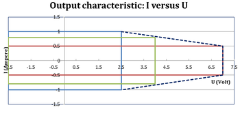
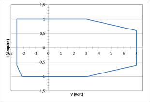

XPS256 programming - DPS128 and UHC4 migration to XPS256
The XPS256 can replace the DPS128 / DPS64 and UHC4 / UHC4T cards but some differences are to be observed.
This topic describes the migration in context of programming the XPS256 card. For corresponding information related to the design of the DUT board, refer to DPS128 and UHC4 migration to XPS256 in the DUT board design reference.
Ganging considerations
With DPS128 / DPS64 and UHC4 / UHC4T, the ganged channels must be consecutive. This rule applies also if channels from different pogo blocks are ganged. For example, the last channel from pogo block A must be ganged with the first channel of pogo block B.
With regard to this rule, XPS256 is fully compatible, but allows also flexible ganging, which means that channels can be assigned to a ganging group even if they are not consecutive. This could simplify the layout of the DUT board.
The maximum number of ganging groups must be considered for flexible ganging of XPS256.
For more information, refer to XPS256 ganged in the test head cards reference.
Power budget
Unlike legacy similar cards, XPS256 does not require distributing a power budget across the active pins.
Nevertheless, the available power of an XPS256 card limits the maximum current for the 256 channel high-current variant XPS256 (EK751HC) in some cases as can be seen in XPS256 voltage and current capability specifications.
Voltage and current capabilities (DPS128 - XPS256)
Considering the whole card, XPS256 is generally extending the capabilities of DPS128-HC and DPS64. Below 2 V, XPS256 can deliver all the 256 A. For higher voltages it still provides more power than DPS128-HC and DPS64.
The diagrams below show the continuous voltage and current capabilities per channel. The original version of the diagrams is available in DPS128 specifications and XPS256 specifications.
| DPS128-HC | XPS256 |
|
 |
 |
The following table compares the capabilities of DPS128-HC and XPS256.
| DPS128-HC | XPS2561) | ||
|---|---|---|---|
| Maximum source / sink current per card |
66 A / 58 A @ 2.5V |
176 A / 176 A @ 2.5V |
|
| Power domains | 2 | none | |
| Maximum current @ 2.5 V ... | 1.0 A / 0.879 A | 1.0 A / -1.0 A | |
| … channels simultaneously | 66 | 176 | |
| Maximum current @ 2.5 V ... | 0.480 A / 0.411 A | 0.8 A / 0.9 A | |
| … channels simultaneously | 128 | 256 | |
| Maximum current @ 4.0 V ... | 0.346 A / 0.405 A | 0.6 A / 0.9 A | |
| … channels simultaneously | 128 | 256 | |
| Maximum current @ 7.0 V ... | 0.209 A / 0.394 A | 0.4 A / 0.6 A | |
| … channels simultaneously | 128 | 256 | |
Functional changes
- Introduced in SmarTest 7.10.1